Awesome Armadillos
 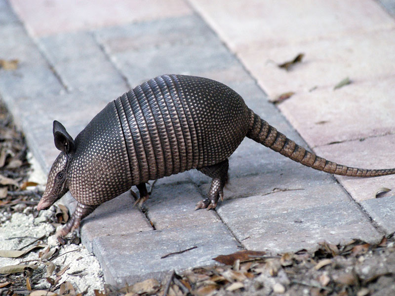
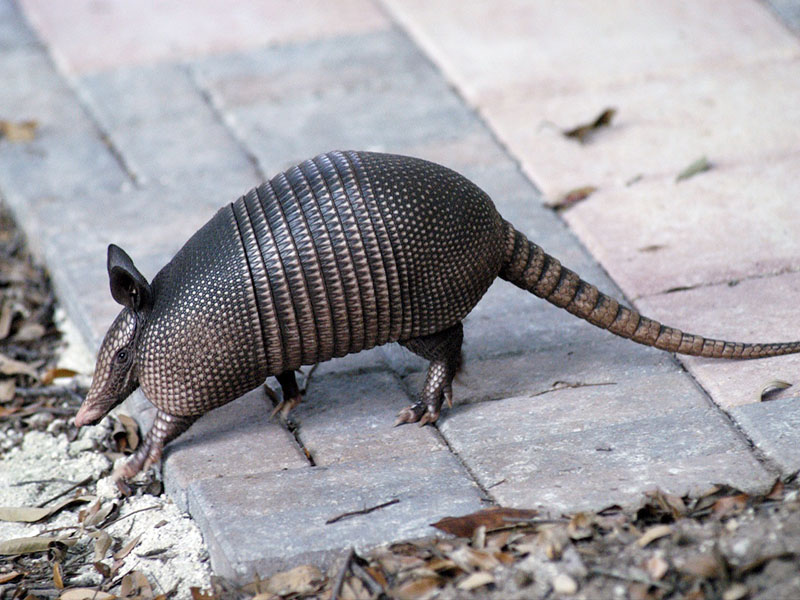
 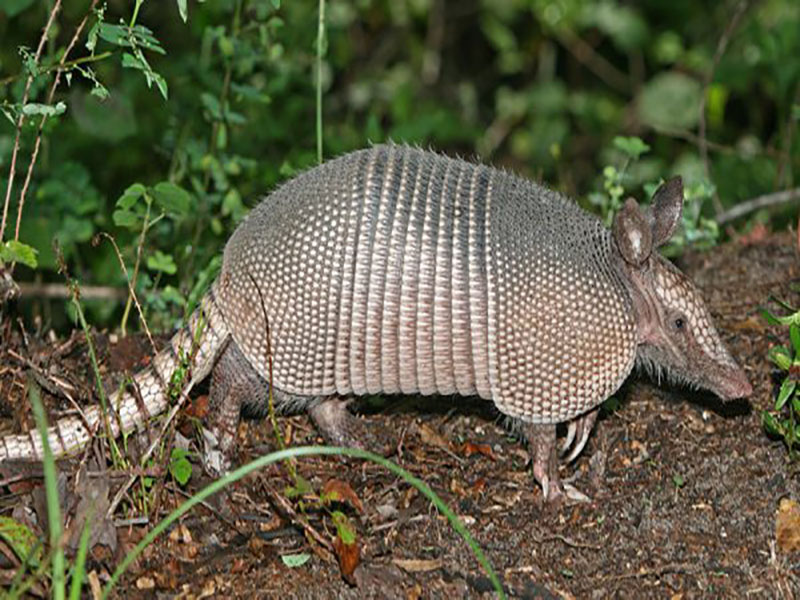
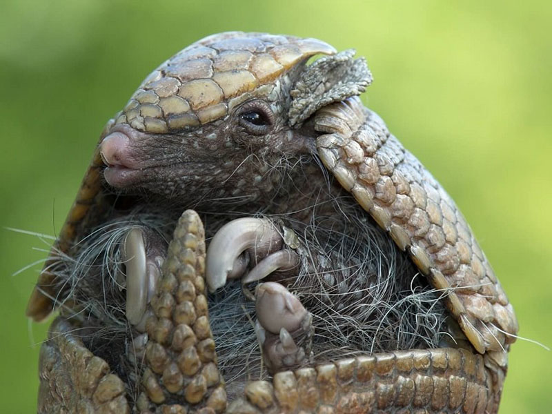
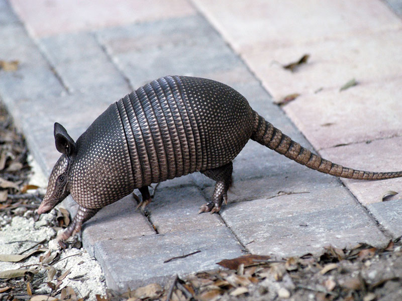
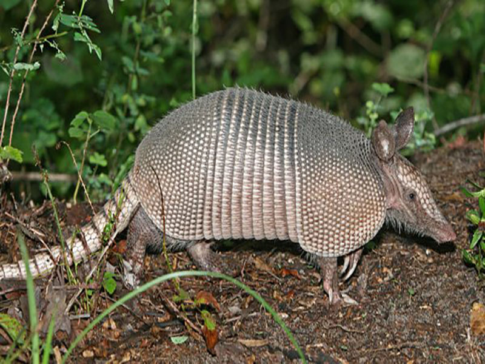
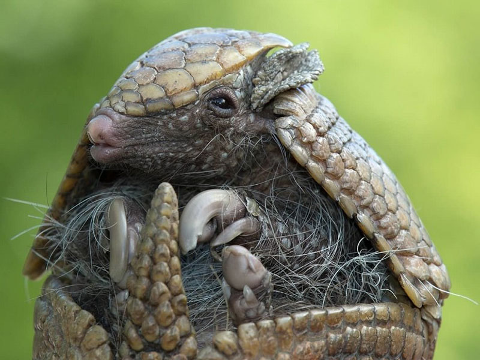
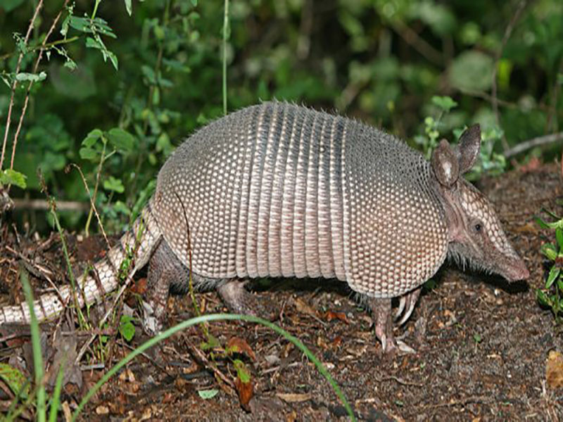
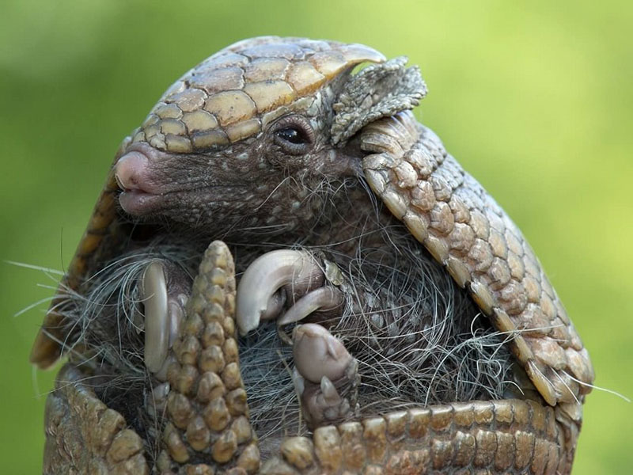
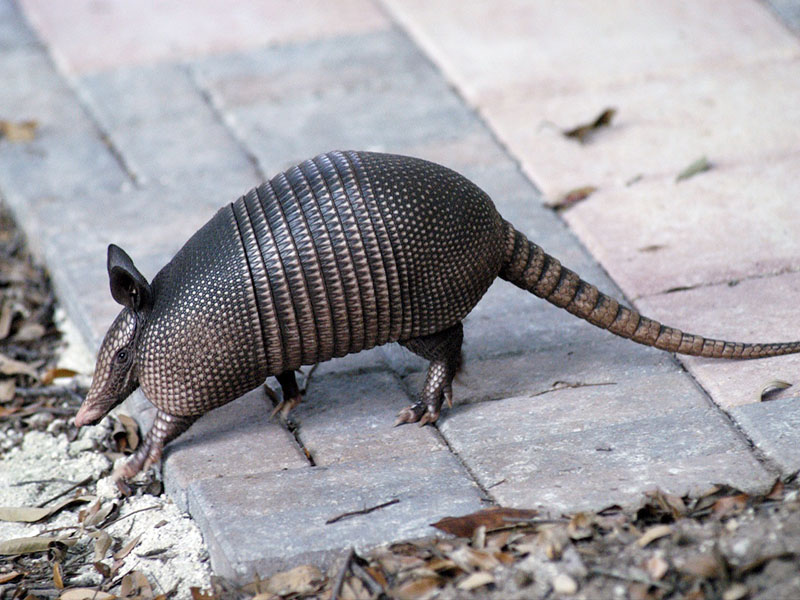
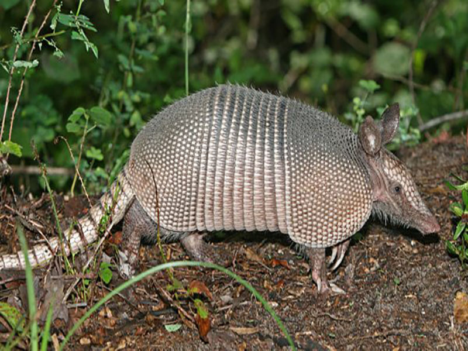
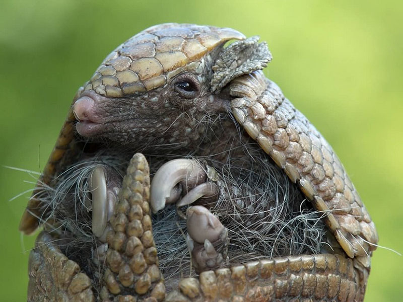
An armadillo produces a lot of meat. The smaller ones are best for frying; t he older ones need to be cooked slowly for a long time to ensure tenderness. After cutting carcass out of the shell, thoroughly wash meat. Salt and pepper armadillo. Stuff with chunks of apple and pineapple. Coat with butter and wrap in foil and place in roasting pan. Bake in a 325 degree oven until internal temperature reaches 180 degrees. Allow 30-45 minutes per pound. Allow 1/3 pound of meat per serving.
Dust armadillo meat in flour, salt, and pepper. Brown on both sides in the butter. Put enough water in pot to cover after adding remaining vegetables. Cover and simmer until meat is tender, about 2 hours. Add seasoned flour and water to thicken liquid.
Mix all ingredients of marinade and add armadillo. Marinate about 8 hours, turning meat occasionally. Remove armadillo and reserve marinade. Melt butter in deep skillet and brown armadillo pieces. Pour in marinade and bring to a boil. Stir in seasoning, cover and simmer until tender (about 1 to 1 1/4 hours.) Remove skillet from the fire and place armadillo pieces on a warmed platter. Mix mustard and cornstarch, then mix in cream. Return skillet to low heat and stir in this mixture a little at a time. Stir sauce until hot, but not boiling, and thickened. Pour sauce over armadillo. Serve with steamed rice.
Mix all ingredients of marinade and add armadillo. Marinate about 8 hrs., turning meat occasionally. Remove armadillo and reserve marinade. Melt butter in deep skillet and brown armadillo pieces. Pour in marinade and bring to a boil. Stir in seasoning, cover and simmer until tender (about 1 - 1 1/4 hours.) Remove skillet from the fire and place armadillo pieces on a warmed platter. Mix mustard and cornstarch, then mix in cream. Return skillet to low heat and stir in this mixture a little at a time. Stir sauce until hot, but not boiling, and thickened. Pour sauce over armadillo. Serve with steamed rice.
Armadillo is cleaned similarly to turtle. Clean and cut into serving pieces. Marinate the meat in a sauce made by combining salad oil, vinegar, water, salt and onion. Marinate for 24 hours. Drain meat and place in a glass container. Pour 1 quart of red wine over meat and let it stand for 6 to 8 hours in refrigerator. Remove meat and let drain for 1 hour. Place oil in black iron pot brown sausage and armadillo. Remove armadillo, but leave sausage in the pot. Add onion, celery, bell pepper, garlic and saute with sausage until vegetables are tender. Add the steak sauce, Worcestershire, salt pepper and monosodium glutamate. Stir until well mixed. Put armadillo meat back into pot. Add enough water to cover meat. Bring to a boil. Reduce heat and simmer covered for one hour. Turn pot by handle back and forth to stir. Add mushrooms and wine, slowly stirring them into pot. Sprinkle parsley and onion tops and lay thin lemon slices on top. Simmer without cover for 10 to 15 minutes. Serve over rice.